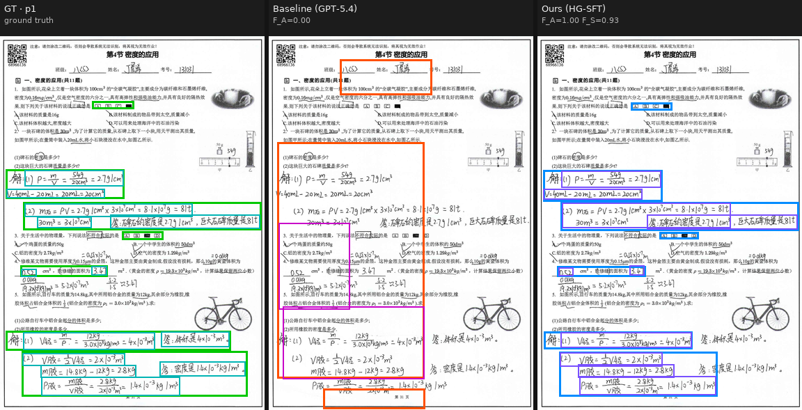
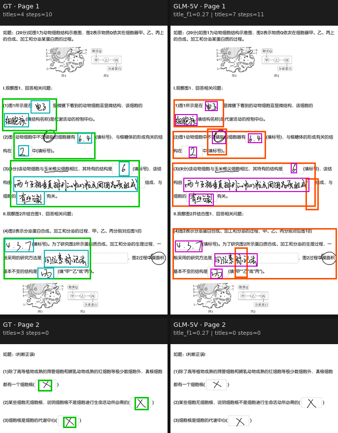
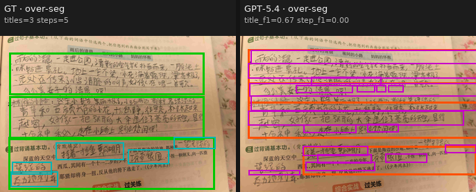
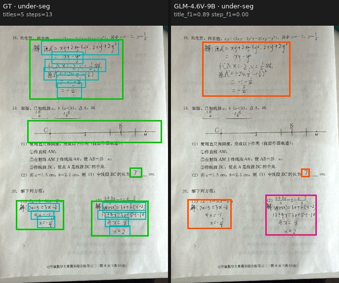

1Institute of Automation, Chinese Academy of Sciences ·
2Beijing Jiaotong University ·
3Tsinghua University ·
4Sun Yat-sen University ·
5The Hong Kong University of Science and Technology (Guangzhou)
✉ Corresponding authors
Automated homework assessment depends not only on recognizing student answers, but also on accurately locating where each answer and each intermediate reasoning step appears in noisy, multi-page handwritten work. This paper addresses the missing evaluation setting of page-aware, two-level answer-region grounding: given a sequence of homework page images, a model must localize complete answer regions and their ordered step-level subregions linked by a hierarchical containment constraint.
We introduce HG-Bench, a benchmark of 500 human-annotated K–12 homework samples curated from a 1,489,278-image source pool, paired with a page-aware evaluation protocol that separately measures complete-answer localization ($\mathcal{F}_A$) and step-level decomposition ($\mathcal{F}_S^{\mu}$), revealing whether models truly ground the spatial structure of student reasoning rather than merely parse visible text.
Across nine frontier closed-source APIs (GPT-5.4, Claude-Sonnet-4.6, Doubao-Seed-2.0-Pro, Gemini-3.0-Pro-Preview) and competitive open-weight VLMs (Qwen3.5-397B-A17B, GLM-5V-Turbo, Kimi K2.5, GLM-4.6V 9B), no zero-shot system exceeds 55.22% on $\mathcal{F}_A$ or 48.22% on $\mathcal{F}_S^{\mu}$, while a single-stage GLM-4.6V 9B reference fine-tuned on ~10k in-domain examples reaches 74.97 / 72.26. These results identify step-level handwritten grounding as a concrete capability gap and provide a reproducible benchmark, evaluation protocol, and trained reference point for future work on automated homework assessment.
HG-Bench is curated from 1,489,278 anonymized student homework images spanning multiple subjects and grade levels. From this raw pool, 10,420 valid samples are annotated and partitioned into a 500-sample held-out test set (HG-Bench) and a 9,920-sample training pool (HG-SFT), with 250 samples held out from each channel:
12 trained annotators draw question-level and ordered step-level boxes under a strict hierarchical containment rule, with 5 senior reviewers independently accepting or returning each annotation. Inter-annotator agreement on a 50-sample subset annotated by two independent annotators: mean IoU 0.86, 85% of boxes match at $\mathrm{IoU} = 0.5$, Cohen's $\kappa = 0.83$ for binary box-matching, Fleiss' $\kappa = 0.81$ for discrete annotation fields (question-type, containment, ordering) — all in the substantial agreement band.
Given a sequence of $P$ handwritten homework page images $\{\mathbf{I}_p\}_{p=1}^{P}$, the model must output a JSON array $\{q_i\}_{i=1}^{N}$ where each element corresponds to one question and contains:
complete_answer_box,xyxy normalized format, enclosing the
full handwritten answer to the question,step_id (one-indexed in the student's writing order) and its own box $\mathbf{b}_{i,j}$.Every step box must be fully contained within its parent question-level box (hierarchical consistency). A schematic example of the expected output:
[
{ "box_2d": [100, 200, 180, 300],
"type": "complete_answer_box" },
{ "box_2d": [400, 220, 490, 320],
"type": "complete_answer_box",
"steps": [
{"box_2d": [410, 230, 440, 320], "step_id": 1},
{"box_2d": [450, 230, 480, 320], "step_id": 2}
]
},
{ "box_2d": [500, 220, 580, 780],
"type": "complete_answer_box",
"steps": [
{"box_2d": [510, 230, 540, 780], "step_id": 1},
{"box_2d": [550, 230, 580, 780], "step_id": 2},
{"box_2d": [590, 230, 620, 780], "step_id": 3}
]
}
]
Unlike standard grounding tasks that flatten all bounding boxes across an entire document, HG-Bench's evaluation operates strictly at the page level: within each page, we perform greedy one-to-one matching between ground-truth $\mathcal{G}$ and predicted $\mathcal{P}$ boxes under an IoU constraint ($\mathrm{IoU} \geq 0.5$), yielding per-page TP, FP, FN counts.
Per-page box-level F$_1$ averaged within each multi-page sample, then macro-averaged across all successfully evaluated samples:
$$\mathcal{F}_A = \frac{1}{|\mathcal{S}_{\text{succ}}|}\sum_{s \in \mathcal{S}_{\text{succ}}} \left(\frac{1}{|\mathcal{M}_s|}\sum_{m \in \mathcal{M}_s} \mathrm{F}_1(s,m)\right) \times 100$$Step boxes are highly sparse (many pages contain none). We micro-aggregate step-level TP, FP, FN only over step-bearing pages to avoid bias from many empty pages, computing a single unified F$_1$.
| Model | $\mathcal{F}_A$ | $\mathcal{F}_S^{\mu}$ | $\mathcal{F}_S^{M}$ | Succ% | $\bar{\mathcal{S}}$ | Rep% |
|---|---|---|---|---|---|---|
| Closed-source frontier APIs | ||||||
| GPT-5.4 | 14.91 | 1.55 | 1.38 | 100.0 | 8.12 | 0.4 |
| Claude-Sonnet-4.6 | 16.83 | 1.63 | 1.21 | 99.2 | 8.76 | 2.8 |
| Doubao-Seed-2.0-Pro (2026-02-15) | 52.65 | 44.78 | 42.59 | 49.4 | 21.22 | 0.0 |
| Doubao-Seed-2.0-Pro (2026-04-01) | 55.22 | 40.11 | 34.88 | 99.8 | 42.70 | 0.2 |
| Gemini-3.0-Pro-Preview | 50.90 | 48.22 | 37.58 | 100.0 | 42.33 | 6.0 |
| Open-weight baselines | ||||||
| Qwen3.5-397B-A17B | 42.71 | 18.15 | 17.73 | 94.2 | 32.73 | 4.0 |
| GLM-5V-Turbo | 46.69 | 26.29 | 23.78 | 100.0 | 40.10 | 0.4 |
| Kimi K2.5 | 31.21 | 7.42 | 7.21 | 79.4 | 20.18 | 1.0 |
| GLM-4.6V 9B (base) | 34.15 | 7.65 | 4.60 | 100.0 | 29.46 | 3.8 |
| Reference SFT system (Ours) | ||||||
| GLM-4.6V-9B + HG-SFT | 74.97 | 72.26 | 48.25 | 100.0 | 71.53 | 0.8 |
| Δ over best prior | ↑ 19.75 | ↑ 24.04 | ↑ 5.66 | – | ↑ 28.83 | – |
Table 1. Main results on HG-Bench ($N = 500$ samples for every model). Bold = best; underline = second-best. All localization values scaled by ×100.
No zero-shot baseline — closed- or open-source — exceeds 55.22 on $\mathcal{F}_A$ or 48.22 on $\mathcal{F}_S^{\mu}$. The ~10k-example reference system reaches 74.97 / 72.26, leaving headroom of roughly 20 and 24 absolute points. The 397B-parameter Qwen3.5-397B-A17B remains at 42.71 / 18.15, weaker than several smaller closed APIs and below the consumer-class GLM-5V-Turbo on $\mathcal{F}_S^{\mu}$.
Every zero-shot baseline degrades sharply from $\mathcal{F}_A$ to $\mathcal{F}_S^{\mu}$. Open-weight Kimi K2.5 and GLM-4.6V 9B fall to single-digit step scores, and even commercial GPT-5.4 and Claude-Sonnet-4.6 nearly collapse (1.55 and 1.63). The reference SFT system narrows the $\mathcal{F}_A \to \mathcal{F}_S^{\mu}$ gap to ~3 points — we accordingly recommend $\mathcal{F}_S^{\mu}$ as the primary ranking axis.
Of the 115 universally-missed samples at $T = 0.5$ (no baseline reaches title-F$_1 \geq 0.5$), the reference SFT reaches title-F$_1 \geq 0.5$ on 68 samples (59.1%). At the stricter $T = 0.7$ it still rescues 45.7% of the 223 universally-missed samples — the SFT delta is not a uniform shift over easy samples; it specifically recovers samples beyond the reach of frontier zero-shot systems.
Per-sample title-F$_1$ across the nine baselines reveals a smooth difficulty gradient and confirms HG-Bench is far from saturated:
Each case below shows the same multi-column layout: ground truth on the left, several representative baselines in the middle, our reference SFT on the right. Question-level boxes and step-level boxes are drawn in contrasting colors.




Single-stage SFT No RL No synthetic CPT ~24 GPU-hours
To verify learnability and provide a reproducible lower-bound reference, we fine-tune GLM-4.6V 9B on the 9,920-sample HG-SFT training pool using single-stage supervised fine-tuning — no reinforcement learning, no synthetic continued pre-training, and no out-of-domain data mixing. Train/test deduplication: every training image is checked against the test pool by perceptual hashing (pHash, Hamming distance $\leq 5$) plus exact metadata match; before dedup the raw training pool contained 14,264 samples; pHash filtering removed 4,344 near-duplicates, yielding the final 9,920.
| Base checkpoint | GLM-4.6V 9B |
| Precision | bfloat16 |
| Sequence length | 32,768 |
| Visual tokens per image | up to 10,000 (variable shape, jitter 0.75–1.25) |
| Optimizer | AdamW, $(\beta_1,\beta_2)=(0.9, 0.95)$, $\epsilon = 10^{-8}$ |
| Weight decay | 0.1 |
| Gradient clipping | 1.0 |
| LR schedule | cosine, 30-step warmup |
| Peak / min LR | $1\times10^{-6}$ / $5\times10^{-7}$ |
| Global batch size | 32 (micro-batch 1) |
| Training steps | 930 (= 3 epochs × 9,920 examples) |
| Hardware | 1 node, 8×H100-80GB |
| Tensor / Context / Sequence parallel | 2 / 2 / enabled (incl. ViT tower) |
| Wall-clock time | ~3 hours |
| Total compute | ~24 GPU-hours |
The following artifacts are available or planned for public release under terms permitting educational research use:
evaluate.py, prompt.py, and sample files in examples/.You are a high-precision visual annotation expert for educational
homework and exam papers. Your task is to identify each student's
handwritten answer regions in the provided images and output two
types of bounding boxes, with coordinates in [xmin, ymin, xmax, ymax]
format normalized to [0, 1000].
Box types
(a) complete_answer_box: tightly contains the student's entire answer
to one question. For multiple-choice and true/false items, if both
a bubble-fill region and a hand-written letter answer are present,
prefer the bubble-fill region.
(b) step_box: used for multi-step answers (computation, derivation,
multi-blank fill-in). Each step or blank is boxed separately and
assigned a step_id starting from 1 in the student's writing order.
Every step box must be nested inside the corresponding
complete_answer_box.
Annotation rules
- Box only the student's own marks; do not box printed question text
or teacher corrections.
- Step boxes must fully contain the handwritten content of that step
or blank.
- For a multi-blank item, each blank becomes a separate step box in
left-to-right, top-to-bottom order.
Output format
Emit a JSON list. Each element is one question-level object with
fields box_2d, type (fixed to complete_answer_box), and an optional
steps list whose elements each carry their own box_2d and integer
step_id. Items must be emitted in the order the student answered.
Coordinates must tightly bound the handwriting without cropping any
character.
If you find HG-Bench useful in your research, please consider citing:
@article{hgbench2026,
title = {{HG-Bench}: A Benchmark for Multi-Page Handwritten Answer-Region Grounding
in Automated Homework Assessment},
author = {Chuangxin Zhao and Boyan Shi and Yanling Wang and Yijian Lu and
Canran Xiao and Jiali Chen and Jun Xia and Yan Wang and
Ji Qi and Juanzi Li},
journal = {arXiv preprint arXiv:2603.XXXXX},
year = {2026}
}